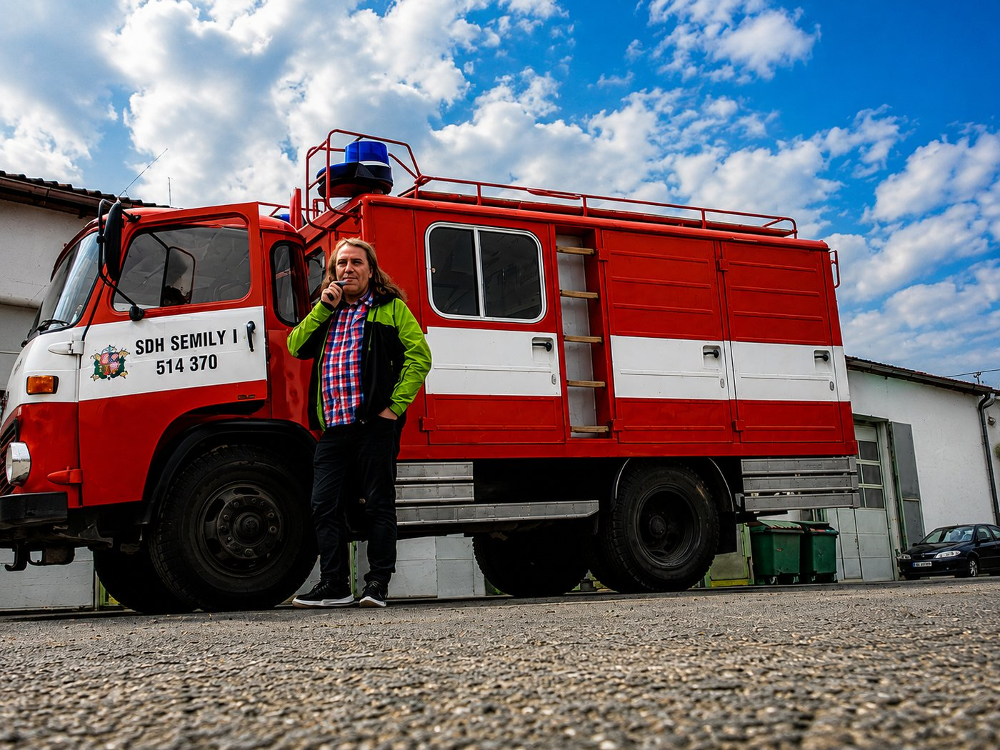

🚒 Hasiči
Aktivní člen SDH Semily. Bohužel na to teď nemám moc času — ale když to vyjde, vyjedu.
Řidič, cestovatel, milovník Itálie, technologií a chytré domácnosti. Tady najdeš, čím se baví moje hlava i auto.
Praktický průvodce, regiony, kuchyně, italské tipy. Vstup do hlavní cestovní sekce.
Dům, který se sám stará o topení, světla, audio a ranní rytmus. Co umí, jak to funguje a co mě to naučilo.
Osobní pohled na investování, vzdělávací checklisty a interaktivní účetní kniha (demo).
Cesty po Evropě — pracovně i pro radost. Itálie, Chorvatsko, Skandinávie, Pobaltí.
Místa, kam se rád vracím. Toskánsko, Lerici, káva, kuchyně a praktické tipy pro cestovatele.
Vlastní systém pro topení, světla a audio. Sám si hlídá, co má kdy dělat — bez aplikací a tlačítek.
Jak já přemýšlím o penězích — zlato, akcie, kryptoměny. Dlouhodobě, ne na rychlé spekulace.
Vybraná videa z cest, Itálie, autobusových zájezdů. Plná galerie v sekci Cestování.
Ekosystém osobních digitálních projektů, které si ve svém volném čase buduju — chytrá domácnost, finance, cestování, jídelníček i sbírka. Jak vznikaly a proč běží všechno lokálně bez cloudu. Délka ≈ 9 minut.
Za volantem jsem od roku 1997. Část života jsem strávil v Itálii — v toskánském přímořském městečku Lerici. Mezi tím jsem stihl podnikat ve výpočetní technice a provozovat e-shop. Dnes jezdím u BusLine a ve volném čase se věnuji svým projektům.

Aktivní člen SDH Semily. Bohužel na to teď nemám moc času — ale když to vyjde, vyjedu.
Občas si zahraju. Taky na to nemám čas — a hlavně už nemám na tenis ani dech 😅.
A co dalšího mě baví: